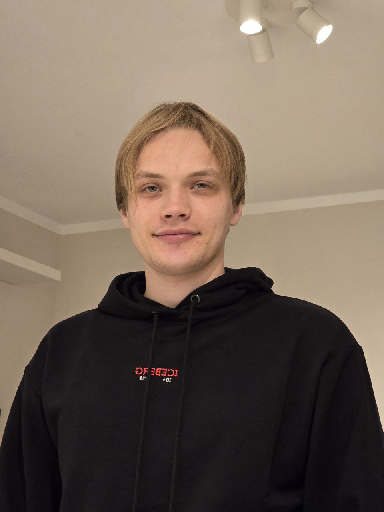

Mikita Lashkarou

- Email: ognivopl@gmail.com
- GitHub: Ognivo
- Discord: Agusha15
Self-introduction
I am an aspiring Junior Frontend Developer (also open to an Internship) looking to start my career in IT. I love frontend because small changes in code instantly affect the user experience — I can make things work, move, and feel alive, and I immediately see the result. Over the last year I focused on game design, which I genuinely enjoyed: prototyping, iterating on ideas, and thinking about how people interact with systems and interfaces. Now I want to return to something I once tried before and always liked — building for the web. My strengths are attention to detail and a fast learning pace when I have a clear goal. I feel confident with HTML and CSS and I am currently rebuilding my JavaScript fundamentals through regular practice and small projects. I am looking for a team environment with mentoring and code reviews, where I can grow into a reliable developer and build financial independence through my work.
Skills
- HTML5 (semantic markup)
- CSS3 (Flexbox, Grid, adaptive design)
- Git & GitHub (branches, basics)
- JavaScript (beginner level)
- C# (beginner level)
- Gamedesign (prototyping, level design, product owning)
Education
- BSUIR Bachelor's degree, Marketing/Programming 2017-2021
- rs-school JavaScript/Front-end 2023Q4 (1st stage finished)
- Futuregames Gamedesigner 2024-2025
Projects
Code example
function add(a,b) {
return a + b;
}Languages
- English level: B2 (improving with a tutor)
- Polish level: A2 (practicing at a language school)
- Russian level: Native